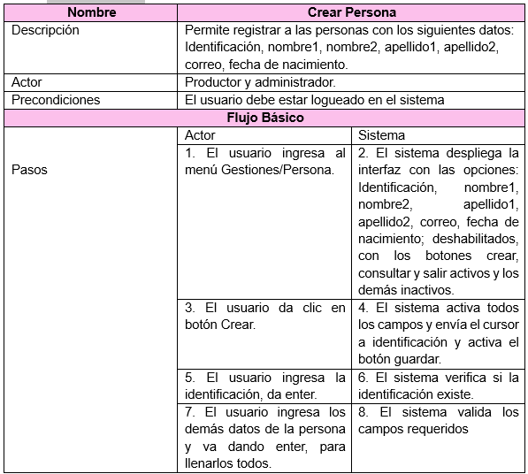

Estudiante 2: Modelado y Diseño
Diagrama de Casos de Uso
García et al. (2024) afirman que: Un caso de uso se define como un conjunto de acciones realizadas por el sistema que dan lugar a un resultado observable El caso de uso especifica un comportamiento que el sujeto puede realizar en colaboración con uno o más actores, pero sin hacer referencia a su estructura interna El caso de uso puede contener posibles variaciones de su comportamiento básico incluyendo manejo de errores y excepciones Una instanciación de un caso de uso es un escenario que representa un uso particular del sistema (un camino)
Escenarios de Casos de Uso
Un caso de uso puede poseer diagramas que detallen su estructura interna: pueden enfatizar su estructura de tiempo de ejecución u otros elementos que surgen en la implementación del caso de uso (por ejemplo, un diagrama de máquina de estados). (p.35)
Diagrama de Clases
Muestra la estructura del sistema en términos de clases, atributos, métodos y las relaciones entre ellas.
MER (Modelo Entidad-Relación)
El diagrama entidad relación es una expresión gráfica que organiza la información de una base de datos y que permite identificar visualmente el tipo de diseño del modelo de datos. El modelo entidad relación (ERD o modelos ER) es una herramienta que permite representar de manera simplificada cómo personas, objetos o conceptos se relacionan entre sí. Se utiliza para exponer cómo se organiza la información en una base de datos.

Diccionario de Diagrama de Clases
Contiene la descripción detallada de cada clase, atributo y método, así como sus tipos de datos y propósito.


Mapa de Navegación
Según Crovi et al. (2002) “Las rutas que pueden seguirse durante una visita o consulta a un sitio Web. Incluyen las diferentes páginas en que se compone el sitio y las diversas aplicaciones que facilita” (p.174)